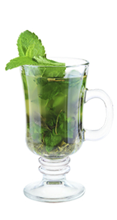

Мятный микс — Сейчас я их пропарю!
Легкий бодрящий аромат мяты и мандарина в этом коктейле дают ощущение свежести, избавляют от беспокойства, улучшают память и поднимают настроение не хуже настоящей русской бани…
Легенда коктейля
Легкий бодрящий аромат мяты и мандарина в этом коктейле дают ощущение свежести, избавляют от беспокойства, улучшают память и поднимают настроение не хуже настоящей русской бани.
Ах, как приятно, пропаривать друзей в хорошем настроении.
(c) Авторский коктейль Дмитрия Соколова